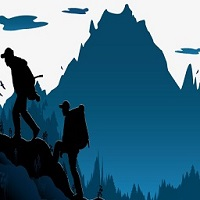
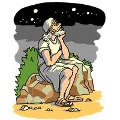
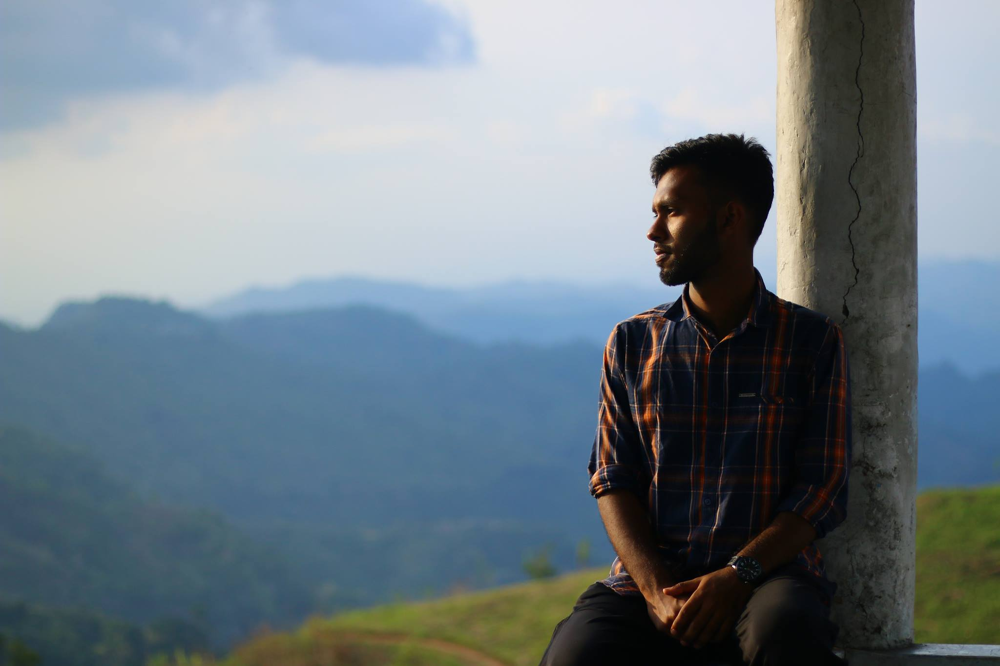
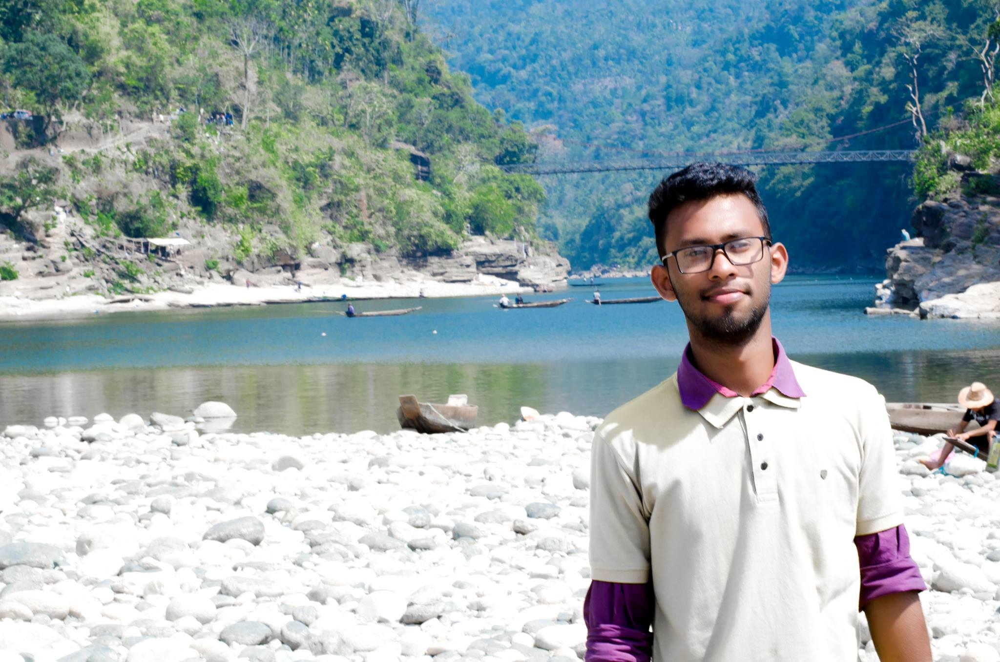
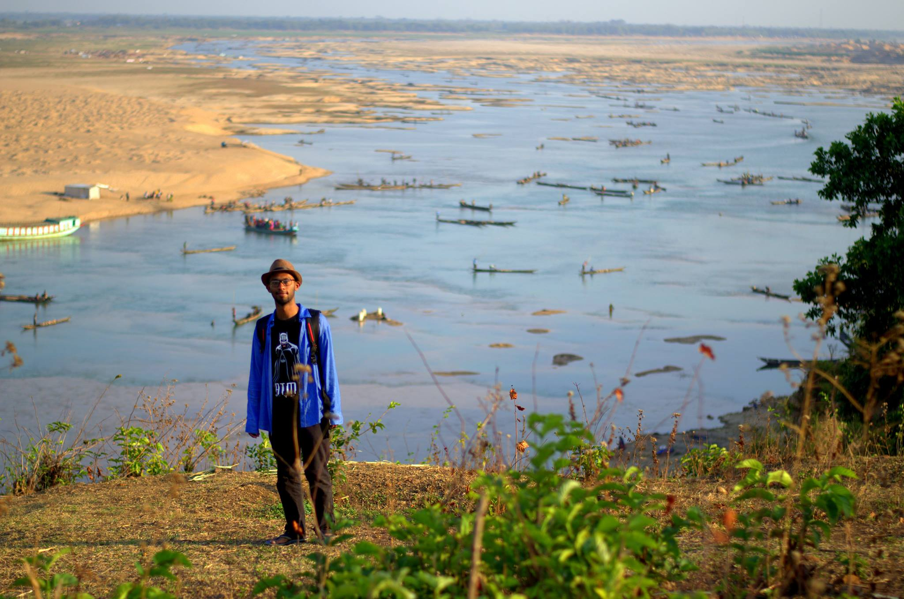
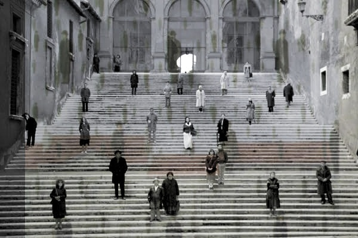
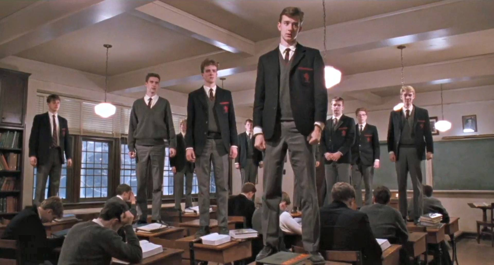

Travelling
 Philosopy
Writting
Fine Arts
Travelling is a drug that I can never get rid of. The people of the places, the landscapes created by god’s own hand attract me like magic. When I saw Alexander super Trump’s journey to wild from the movie IN TO THE WILD – I felt the same meaningless ness that exists within us, same void that we cultivate in the name of society and civilization which is nothing but a mirage where we force ourselves to become happy whereas the true happiness lies within ourselves and this happiness are best felt in front the serenity of the sea or in the sanctuary of hill tracts. From my own experience the rain I have seen once from a “JHUM GHOR” at Alikadam or the rain in the Boga lake! Nothing matches the beauty of these scenes. I don’t know about people but to me rain is best to enjoy at hill tracts.
1 / 7
.jpg)
Tanguar Haor
2 / 7

Chandranath Hill
3 / 7

Peak of Keokradong
4 / 7

Jaflong
5 / 7

Alikodom Adu Falls
6 / 7

Boga Lake
7 / 7

Jadu Kata River
Fine Art gravitates me a lot. And from the humongous genres of fine arts “Surrealism” amaze me a lot . I admire the work Rene Magritte and Zdzsilaw Beksinski the most . Salvador Dali has a great impact in this sector too. Orientalism is also a place of great interest for me. There is a famous Russian artist Vasily Vereshchagin- His works are treat for an eye
.
Rene Magritte's Son of Man

(Here I am attempting to create something similiar but as a photograph)

(Here I double exposured a frame from Andrei Tarakovosky's movie Nostalghia and Rene's art Goloconda
I find a great harmony between this frame and rene's goloconda both of them depicts how alone we are in this earth full of humans)
I find a great harmony between this frame and rene's goloconda both of them depicts how alone we are in this earth full of humans)
I also possess a great affection on philosophy. Mostly after the book Sophie's World happened to me. It changed quite a few string in me. This book has given me an imperishable affection for philosophy. Philosopher wise Enlightenment is such a era for me. I have so much interest for the people of this period. Voltaire, Locke,Kant,Hume,Rousseau and technically Descartes also!! All the gems of modern philosophy. Apart from the people of Enlightenment I am in love with the Baroque period. Where people in one hand believed in "Carpe Diem" on the other hand they created the signs and metaphor of "Memento Mori" moreover the baroque arts and architectures are so awestrucking!! Such an era I must say.

Rene Decartes the man who said "I think therefor I am"
(The father of modern politics also my favourite strategist
"The prince" by Machiavelli is a must read for all)
"The prince" by Machiavelli is a must read for all)

(Salah AD DIN AYUBI
He is one of my most favourite leader and strategist
you can watch Kingdom of Heaven or read about the history of ayubbid dynasty or third crusade to know about him)
He is one of my most favourite leader and strategist
you can watch Kingdom of Heaven or read about the history of ayubbid dynasty or third crusade to know about him)

(Here is one of the most iconic frame from the movie "Dead Poet Society" for this movie
so many of us echoed the magic sentence of baroque period Carpe Diem -Sieze the Day)
so many of us echoed the magic sentence of baroque period Carpe Diem -Sieze the Day)